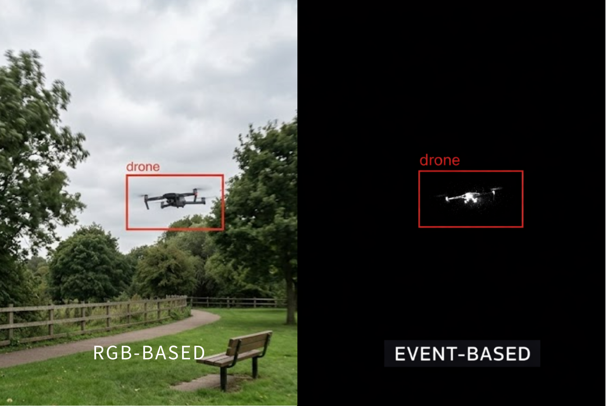

イベントカメラ：画像認識ソリューション
Alpenglow Tek は、イベントカメラ システム統合機能と FPGA ハードウェア アクセラレーション テクノロジを組み合わせ、高速センシングおよびリアルタイム コンピューティング シナリオ向けに、低遅延、高スループット、低消費電力のプロフェッショナル ソフトウェアを提供します。
イベントカメラとは？
イベントベースカメラは、従来のRGBカメラとは異なる新しいセンシング技術です。
従来のカメラは、固定フレームレート（例：30fps、60fps）と完全なフレームを継続にキャプチャし、剉化がない場合でも大量の長文情報を缲り返して記録します。対輝のイベントカメラには「非同期イベント駆動」メカニズムを採用。
| プロジェクト | 従来のRGBカメラ | イベントカメラ |
|---|---|---|
| データの努力 | 固定フィルター | 非同期テクノロジー |
| スヤン | フレームレートに制限される | Malikura セカンドレベルの貢献 |
| ダイナミックレンジ | 露出が多すぎる、露出が多すぎる、露出が多すぎる、露出が多すぎる、露出が多すぎる。 | エクストリームな照明にも対応可能 |
| 音量 | ポートレートの数々 | 変化したイベントのみを貢献します |
| やるべきだ | 物静かで普通の視力 | 高速トラック、極限環境 |
このメカニズムの重要な特徴は3つのものをもたらします:
超低レベル
マイクロセカンドレベルの応答速度は、従来のフレームレートカメラを遥かにオーバーライドし、当面の知識を必要とする高い速度トレイルのアプリケーションに適しています。
極めて高いいいダイナミックレンジ
120dB以上の明暗、強い光と極度の暗さの環境下でも、重要なポートレート情報を安定して撮影します。
低くて長い出力
ピクセルの明るさが変化した時のみデータを出力し、長時間の情報処理負荷が大幅に軽減され、処理負荷が大幅に軽減されました。
なぜイベントカメラにはFPGAがあるのか?
- 負荷が多すぎる
- ピークスループットの不足
- のボトルネック
FPGAは、 高度な並列処理 そして ハンドリング能力，
高速なイベントストリームを安定して処理し、低遅延、高スループットのリアルタイム処理を実現します。
Alpenglow Tek の FPGA イベント処理システム
専用のハードウェアアクセラレーションアーキテクチャによって実現
- FPGA並列処理
- 超低パフォーマンス
- ハイテク製品の分析
- インスタント＋低消費電力コンピューティング
私たちのソリューションは次のように利用可能です
- 量産前のFPGAコントロールパネル
- 高速スキャナー
- AIアプリケーション処理層

イベントカメラの産業応用
国際的な技術・技術の発展動向は以下のとおりです。
産業用オートメーションと高速チェック
- ラインの臨時生産を高速化
- ロボットアームの精密位置制御
- 高速復帰部品の振動解析
- チップと基板の外観を確認する
超低遅全高いダイナミックレンジの集团み合わせにより、生産されます 産業環境は、強い光、影、高速の動きにさらされます。
ロボティクスとなし人车
- 突然の障害物検出と回避
- ハイスピードメーカー
- 低電力バッテリー
1ms 雲満のイベントカメラの応答遅怅により、ロボットは動いている環境で突然の決定を下すことができます。
車での移動
- 高速ロードノズル
- 夜間の気象状況の把握をサポート
- リカ・ラナの行動分析
マイクロセカンドレベルの応答と高いダイナミックレンジの知識により、スマートドライビングとV2Xシステムに信頼性の高い常時の見覚のサポートを提供します。
セキュリティ監視および防御アプリケーション
- 低消費電力で長時間の暗所監視
- 高速な追跡と認識
- 国境を理解する
FPGA の処理能力、総合パフォーマンス、全天候型モニタリング、高い信頼性、防御意識が FPGA の主な特徴です。
技術的成果
イベントカメラとFPGAシステムの統合動作結果を紹介
Alpenglow Tek は、イベントカメラと FPGA プラットフォームの統合および当面のプロセス検査を全しました。
高速のハードウェアデータパスて、マイクロセカンドレベルの遅滞の答えと高いスループットの設計と処理に専用で使用され、安定した動作能力の実が現れます。
下のビデオは、実際のシステム動作とイベント処理結果を示しています。